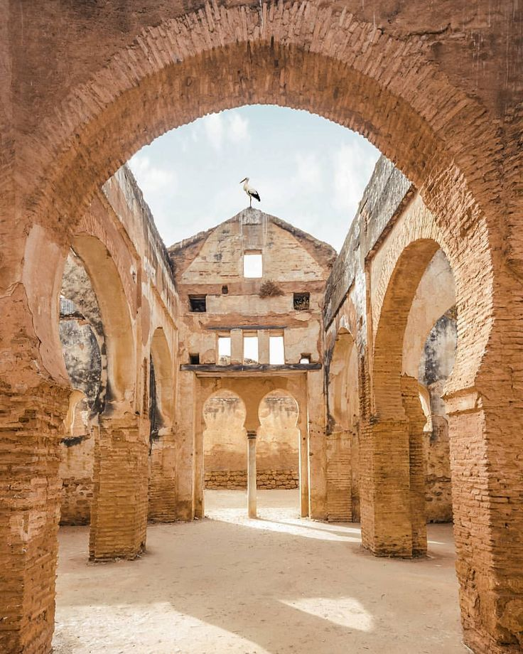
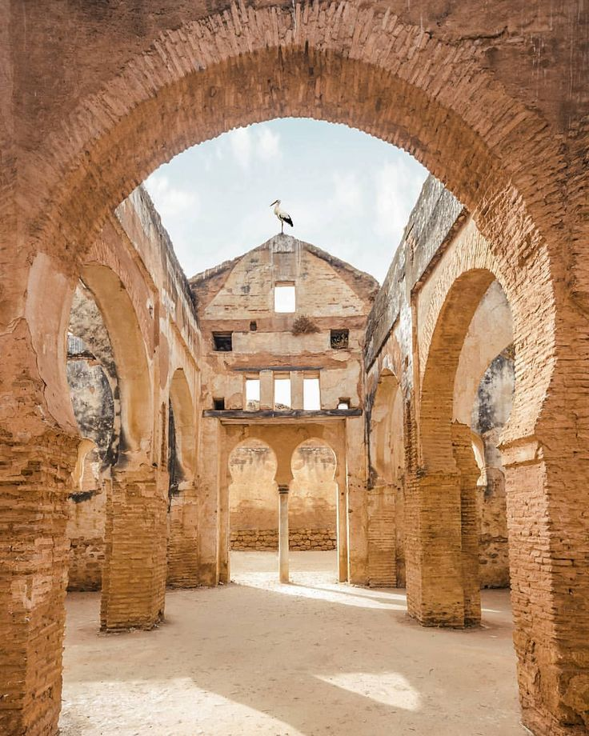
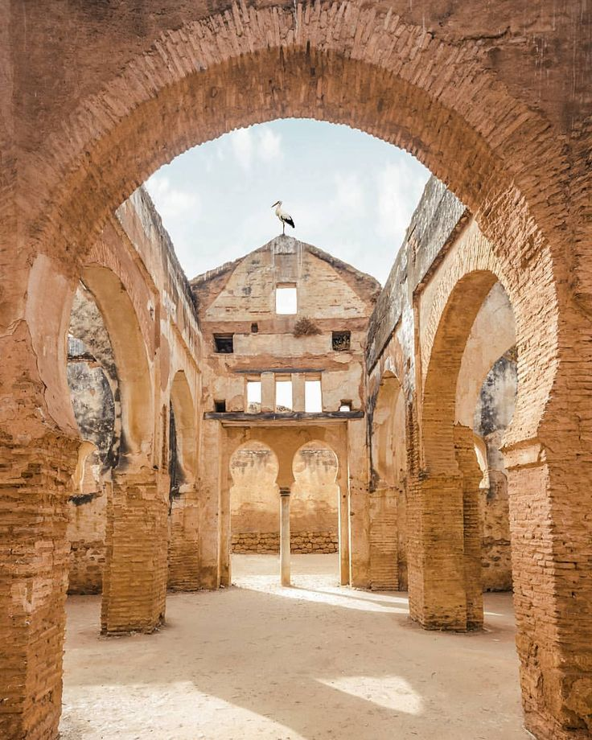

CHELLAH RABAT
Ancient Roman and Islamic Ruins
Chellah is a medieval fortified necropolis in Rabat, blending Roman ruins with Islamic architecture amid peaceful gardens and storks nesting on minarets.


 
